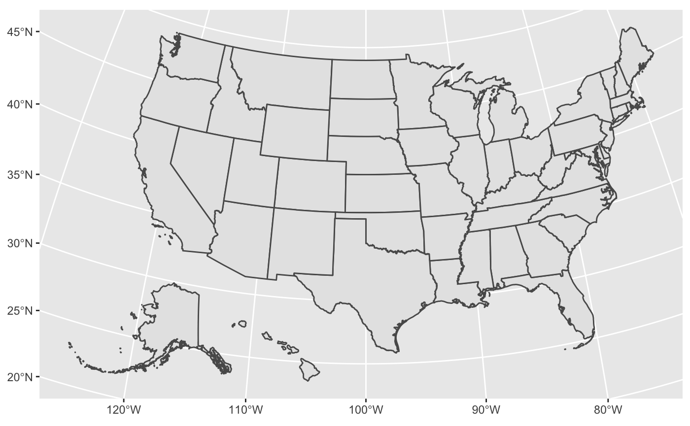
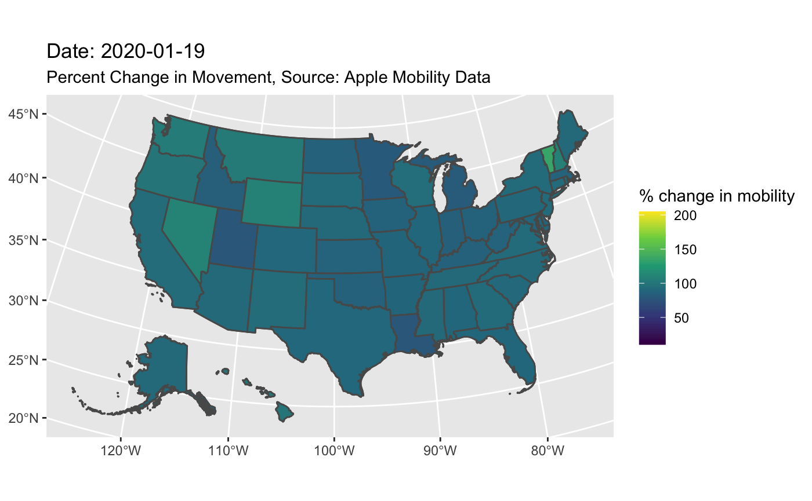

vignettes/animating_covid19_mobility.Rmd
animating_covid19_mobility.RmdHello everyone! This vignette shows how to plot social distancing data on a map using the covid19mobility package.
The packages used to perform the analyses are below, in the approximate order they were used, and what they were used for.
First, we call the data from Apple using the refresh_covid19mobility_apple_subregion() function. There are multiple data sets in the covid19mobility package, so you could theoretically put in any of the other functions to look at different regions and breakdowns of data. I recommend running the refresh functions by one so you can see what the data structure looks like before you start tidying. Here is what the raw data looks like below. We can see that this data is global and breaks down the type of movement (driving, transit, walking) and also includes location codes and types.
head(refresh_covid19mobility_apple_subregion()) #> # A tibble: 6 x 9 #> date location location_type location_code location_code_t… data_type #> <date> <chr> <chr> <chr> <chr> <chr> #> 1 2020-01-13 Abruzzo… state IT-65 iso_3166_2 driving_… #> 2 2020-01-14 Abruzzo… state IT-65 iso_3166_2 driving_… #> 3 2020-01-15 Abruzzo… state IT-65 iso_3166_2 driving_… #> 4 2020-01-16 Abruzzo… state IT-65 iso_3166_2 driving_… #> 5 2020-01-17 Abruzzo… state IT-65 iso_3166_2 driving_… #> 6 2020-01-18 Abruzzo… state IT-65 iso_3166_2 driving_… #> # … with 3 more variables: value <dbl>, alternative_name <chr>, country <chr>
What we are then going to do is tidy up that above data using dplyr verbs (my favorite!) First, we want to select all of the datapoints from the US. We’re going to summarize and group each state by mean by date. We also want to only graph weekly intervals to limit the amount of frames in the gif: If you try to put them all in the same gif at once it looks like a nightmare.
apple_us <- refresh_covid19mobility_apple_subregion() %>% filter(country=="United States") %>% # we are only going to map the US group_by(location,date) %>% #we are going to group by location (which is the state) and date summarize_if(is.numeric, mean) %>% #we are going to take the mean mobility score across counties by date and state mutate(weeks=round_date(date, "weeks")) %>% #we are going to take only the first date of each week group_by(weeks) %>% # we are going to group by each week filter(date==min(weeks)) #again we want to take only the first date of each week
The next thing we are going to do is we’re going to call shape files for the US states and counties. We get this from the urbnmapr package. We need to also call the sf package because we are working with shapefiles.
states_sf <- urbnmapr::get_urbn_map("states", sf=TRUE) %>% st_as_sf() # coerce this to a shapefile.
Here, we want to left_join() our shapefile tibble and our mobility tibble together so that we can graph them all together. Sometimes ggplot will throw an error because when you join the tibbles, you lose the identification that we do have shapefiles in our data set (see this github post. So you always want to use st_as_sf() to save the day!)
total_apple_us <- left_join(apple_us,states_sf, by=c("location"="state_name")) %>% st_as_sf() # this function makes sure the shape files are readable. total_apple_us <- as.data.frame(total_apple_us) %>% st_as_sf()
Now, we are going to set up our ggplot graph. First, we need to check and make sure that the state shapefile data is good, so we graph it below.
ggplot() + geom_sf(data=states_sf)

Finally, we can construct the graph. There are a lot of moving parts here, so I’ve commented each line to indicate what it does.
ggplot() + #call ggplot geom_sf(data=states_sf) + # map the shape files to the map of the USA geom_sf(data= total_apple_us, aes(fill=value)) + # fill with our data frame and value, which is mobility score labs(fill="% change in mobility", title="Date: {current_frame}", subtitle="Percent Change in Movement, Source: Apple Mobility Data", fill = "% change in mobility") + #add titles scale_fill_viridis_c() + transition_manual(date) #animate by day - this is a gganimate function! #> nframes and fps adjusted to match transition

In the graph, darker colors indicate less movement than usual (compared to the baseline) and lighter colors indicate more movement. When you look at this graph, it’s pretty cool to notice how the percent change in mobility decreases as the pandemic progresses and social distancing continues on. However, you can also see that towards the end of the gif, some of the states start moving around more as reopenings begin.
And that’s pretty much it! You can apply this method of graphing to multiple segments of the data and functions in the package, including the Apple data, the Google data, and you can also use ggmap to make worldwide maps. Happy mapping, and stay safe out there!
Cleo Falvey
UMass Boston Biology Major, Math Minor